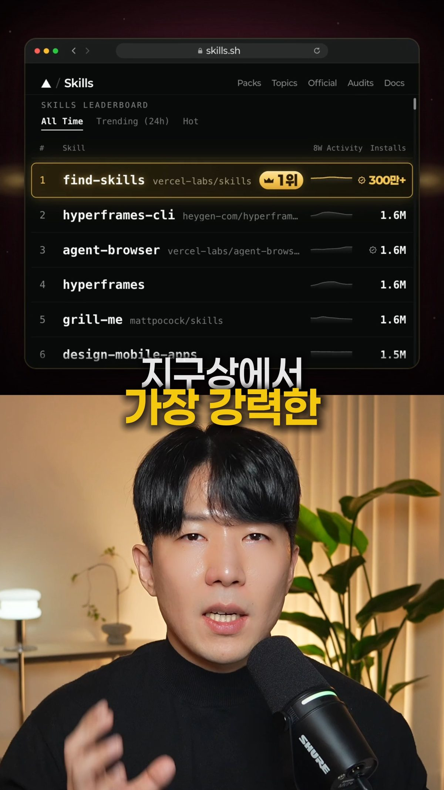

테크 · 릴스 · 2026-11-22
클로드 코드용 스킬 검색 스킬 find-skills 사용법
Vercel 엔지니어가 만든 find-skills는 클로드 코드에 하려는 일만 말하면 약 70만 개 스킬 목록에서 맞는 스킬을 찾아 설치 명령까지 보여 주는 스킬 전용 검색 엔진이다.

- find-skills는 다른 스킬을 찾아주는 클로드 스킬로, Vercel 엔지니어가 만들었고 설치 수가 300만을 넘었다고 한다.
- 약 70만 개 스킬이 모인 목록에서 할 일에 맞는 스킬을 찾아 클로드에 바로 추가해 준다.
- '좋은 스킬 추천해 줘'보다 '리액트 앱 속도를 올릴 스킬 찾아 줘'처럼 분야와 작업을 함께 말해야 후보가 좁혀진다.
- 후보의 설치 수가 1,000 이상이면 우선 고려하고 100 미만이면 보류한다.
- vercel-labs·anthropics·microsoft 같은 공식 출처에서 만든 스킬이면 믿을 만하며, 한 번에 여러 개가 아닌 가장 맞는 하나만 설치한다.
- 후보마다 이름·설명·설치 수·설치 명령·skills.sh 링크가 함께 나오면 제대로 작동한 것이다.
- 맞는 스킬이 없다고 나오면 그 작업은 클로드에게 바로 맡기면 된다.